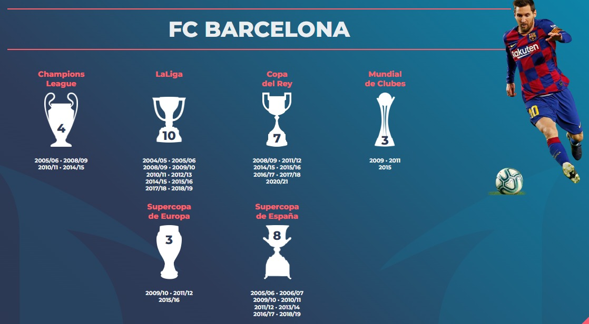
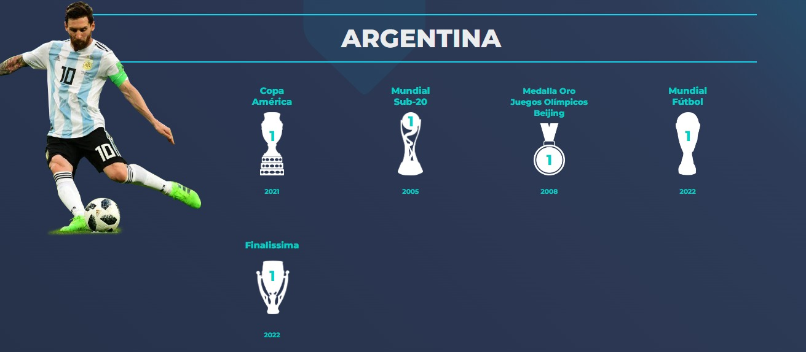
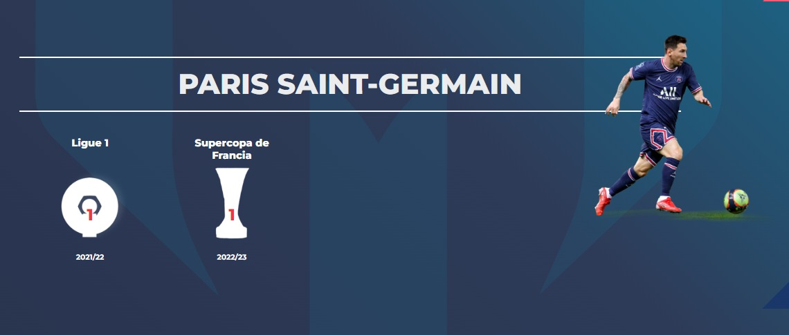

LIONEL ANDRES MESSI
Lionel Messi es un deportista que ya dejó su huella en la historia del mundo. El argentino que militó para el FC Barcelona y ahora lo hace para el Paris Saint-Germain y su selección es elegido por varios especialistas como el mejor futbolista de la historia y sus estadísticas, sus logros y su talento presentan un buen argumento para ello, como también algunos de los récords que ha conseguido a lo largo del tiempo.
LOS RECORDS MAS IMPORTANTES LOGRADOS POR LIONEL MESSI A LO LARGO DE SU CARRERA SON


